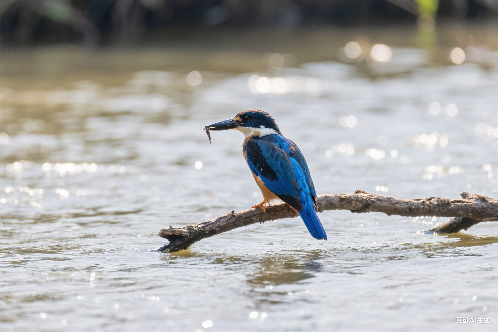

"丰富化不仅是娱乐，更是维持鸟类身心健康的必需品。它能激发自然行为，预防行为问题。"
— 动物行为丰富化专家🎯 丰富化的重要性
环境丰富化是指通过提供各种刺激和活动来改善动物的生活质量。对于宠物鸟来说，适当的丰富化活动能够：
刺激智力发展
通过解谜和探索活动锻炼认知能力
促进身体健康
增加运动量，维持肌肉和骨骼健康
改善心理状态
减少压力和无聊，预防行为问题
激发自然行为
鼓励觅食、筑巢等本能行为
🧩 智力游戏与解谜
智力游戏能够挑战鸟类的认知能力，保持大脑活跃：
🔍 觅食游戏
隐藏食物
将食物藏在纸杯、纸盒或玩具中，让鸟类寻找
觅食球
使用专门的觅食球，鸟类需要滚动才能获得食物
纸包食物
用纸巾包裹食物，鸟类需要撕开包装
🧩 解谜玩具
拼图玩具
适合鸟类的简单拼图，锻炼空间认知
开关玩具
需要按压、旋转或滑动的机关玩具
串珠游戏
让鸟类学会将珠子串在绳子上
🎨 创意DIY玩具
自制玩具不仅经济实惠，还能根据鸟类的喜好定制：
📦 纸盒迷宫
材料：纸盒、剪刀、胶带
制作：在纸盒中剪出通道和开口，创造迷宫结构
玩法：在迷宫中放置食物，让鸟类探索寻找
🎋 天然栖木
材料：苹果木、柳木等安全树枝
制作：清洁并固定在笼内不同位置
好处：提供不同粗细的栖息点，锻炼脚部肌肉
🎪 摇摆玩具
材料：绳子、木块、铃铛
制作：将材料串联制成可摇摆的玩具
效果：提供运动和声音刺激
🌿 觅食垫
材料：草垫、干草、种子
制作：将食物撒在草垫中
目的：模拟自然觅食行为
🎵 音乐与声音刺激
声音环境对鸟类的情绪和行为有重要影响：
🎼 音乐类型
- 古典音乐：舒缓情绪，减少压力
- 自然音效：鸟鸣、流水声等
- 轻柔的流行音乐：适度的节奏感
- 专为鸟类设计的音乐
🔊 播放指南
- 音量保持在适中水平
- 避免突然的大声响
- 定时播放，不要24小时不停
- 观察鸟类的反应调整
🏃♂️ 运动与体能活动
充足的运动对维持鸟类健康至关重要：
🪜 攀爬活动
- 设置不同高度的栖木
- 提供绳梯和攀爬架
- 使用天然树枝创造攀爬路径
- 定期更换攀爬路线
🕊️ 飞行训练
- 在安全环境中进行自由飞行
- 设置飞行路径和目标点
- 使用召回训练增加互动
- 逐渐增加飞行距离和时间
🎯 目标训练
- 教导鸟类触碰特定目标
- 使用目标棒进行引导
- 结合奖励系统
- 逐步增加难度
🌱 自然环境模拟
尽可能模拟自然环境，满足鸟类的本能需求：
🌿 植物环境
- 放置安全的室内植物
- 提供新鲜树枝供啃咬
- 使用人工草坪模拟地面
- 创造不同层次的绿色空间
💧 水环境
- 设置不同深度的水盆
- 提供流动水源（小喷泉）
- 定期更换洗浴水
- 在水中放置安全的玩具
🏞️ 地形变化
- 创造高低不同的栖息点
- 使用不同材质的表面
- 提供隐蔽和开放的空间
- 模拟自然的光影变化
👥 社交互动活动
社交是鸟类生活的重要组成部分：
📅 丰富化活动计划
制定系统的丰富化活动计划：
📅 每日活动
- 晨间：自由飞行时间
- 上午：觅食游戏
- 下午：社交互动
- 傍晚：音乐欣赏
📅 每周活动
- 周一：新玩具介绍
- 周三：环境重新布置
- 周五：特殊训练课程
- 周日：户外活动（天气允许）
⚠️ 安全注意事项
- 所有玩具和材料必须对鸟类安全
- 定期检查玩具的磨损情况
- 避免使用有毒材料或小零件
- 监督鸟类的游戏过程
- 根据鸟类反应调整活动强度
📊 效果评估
定期评估丰富化活动的效果：
🎯 行为指标
- 活动水平的变化
- 探索行为的频率
- 问题行为的减少
- 社交互动的质量
💪 健康指标
- 食欲和体重变化
- 羽毛状态
- 睡眠质量
- 整体精神状态
💡 丰富化小贴士
- 根据鸟类种类调整活动类型
- 保持活动的新鲜感和挑战性
- 结合鸟类的自然行为模式
- 耐心观察并记录鸟类的偏好
- 与其他鸟类主人交流经验